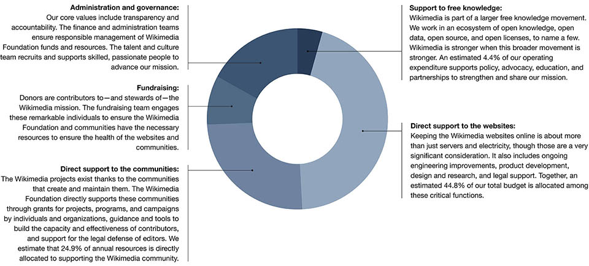

We believe that knowledge is a foundation. It is a foundation for human potential, a foundation for freedom, a foundation for opportunity.
Imagine a world in which every single human being can freely share in the sum of all knowledge. That's our commitment.
Knowledge is powerful. A country or community that has better access to knowledge is more likely to be healthy, more likely to be free, more likely to be happy.[1][2] Unfortunately, access to knowledge is not equal. In some places, people cannot afford to access it, in others, it is censored or constrained.
The students of Sinenjongo High School know how powerful a foundation of knowledge is for their future.
Sinenjongo High School is located in Joe Slovo Park, a small township on the fringes of Cape Town, South Africa. The high school does not have a library, so students must find other ways to access knowledge in order to complete their assignments and study for university entrance exams.
In 2013, Sinenjongo's Grade 12 students wrote an open letter to South Africa's mobile providers, asking for free access to Wikipedia on their mobile phones. They wanted to remove all barriers to their education. They wanted to hold the world in their hands.
A few months later mobile network operator MTN South Africa announced they would make Wikipedia available for free for their 20 million users in partnership with the Wikimedia Foundation.[3]
We believe everyone should have access to all knowledge — for free, without restriction, without limitation. It is a foundation for a brighter future.
Go on — explore the outer limits of Wikipedia. Wikipedia is always expanding and never finished. If you don't discover what you're looking for, you can start creating it yourself.
Wikipedia is the largest source of shared knowledge in human history. It is a living record of discovery, history, and innovation. It is a knowledge engine for the planet, sharing freely licensed content around the world.
Nearly half a billion people turn to Wikipedia every month for everything from preserving cultural heritage, to improving cancer detection, to researching homework. They come to learn. They stay and discover.
Over the course of a year, Wikipedia is edited and read by people on every continent in the world — yes, including Antarctica![5]
Editors and readers — ordinary people — do incredible things with this knowledge. In the United States, a teenager named Jack Andraka invented a test that might be used to detect certain cancers using information he found on Wikipedia.[6]
When Jack was 13, a close family friend passed away from pancreatic cancer, a deadly disease that progresses quickly and quietly.
As a high school student, Jack couldn't afford access to costly academic journals. Instead, he turned to Wikipedia, researching carbon nanotubes and biochemistry.
With knowledge from Wikipedia and free online science journals, Jack developed a prototype for a potential breakthrough method of cancer screening before his 17th birthday.
Wikipedia is written by all of us. The articles, words, pictures, and data are created by a diverse community of people who volunteer to share knowledge with the world.
Wikipedians are students, librarians, musicians, lawyers, scientists, scholars, photographers, mathematicians, engineers, retirees, parents, children, advocates, artists, and explorers — among many other things.
We write articles, take photographs, answer questions, and teach new people how to contribute.
75,000 writers and editors wrote more than 4.5 million new articles this year — and improved countless more
In January of 2014, more than 6,000 new articles were created each day on Wikipedia's 288 different language versions. 84,750 people made more than five edits to Wikipedia in that same time — and many more have stopped by to fix a typo or update a statistic. Each gave their time and their passion to share what they know.
The edit counter is a live count of all edits across all databases in Wikimedia's servers.
How does it work?The edit counter is a live count of all edits across all databases in Wikimedia’s servers.
How does it work? Every five minutes or so, the system queries the databases in the Wikimedia cluster for the sum total of all edits on the Wikimedia projects, and updates this number in a cache. This version queries that cached number of edits using a custom script. It picks a number smaller than the total cached number, displays that, and starts counting upward.
Every few minutes it checks for a new, updated total count. If the live counter has gotten ahead of itself, and the latest cached number is smaller than the script's current count, it jumps back to that; otherwise it keeps counting. The number usually runs about 3 to 5 minutes behind the actual total number of edits on all the Wikimedia projects.
Over any given three months, people make edits to Wikipedia from more than 170 different countries, from Andorra (a landlocked European microstate) to Zimbabwe (with 16 official languages).
Everyone is a potential Wikipedian. All it requires is a belief in our shared vision — a world in which every single human being can freely share in the sum of all knowledge.
Meet some members of our community:
Dr. Netha Hussain is a surgical resident in Kerala, India. There are few encyclopedias in Malayalam, her native language. She found Wikipedia, including Malayalam Wikipedia, powerful and inspiring. She began returning from lectures and and checking her notes against articles — improving quality and depth on subjects such as microbiology, pathology, pharmacology and forensic medicine. She considers contributing to Wikipedia a part of her mission as a medical professional — helping empower people with knowledge.
Jacek Halicki first discovered the Wiki Loves Monuments[7] photo contest through a banner located on top of the main page of the Polish Wikipedia[8]. It was the first time he ever realized he could actually edit Wikipedia, and it quickly became a passion. As a former photojournalist, amateur radio operator, jazz lover, and pensioner with severe mobility impairment, Wikipedia was a way for Jacek to explore the world, contribute his photographic talents, and overcome the barriers in his life.
Dumisani Ndubane comes from a family of modest means.[9] When he was accepted to study electrical engineering at a university in Johannesburg, he found his educational grant did not cover food or housing, and was ultimately compelled to suspend his education. He discovered the free curriculum on Wikiversity and continued his studies as a companion to pursuing online accreditation at the University of South Africa. He received his degree and joined a firm, where he now mentors young engineers and contributes learning modules of his own to teach others.
Dr. Adrianne Wadewitz was an early and prolific contributor to Wikipedia, but it took a while before she felt she could admit that to fellow scholars.[10] Eventually, Dr. Wadewitz, a scholar of 18th century English literature, went public with her passion, becoming one of Wikipedia's first Campus Ambassadors. She consulted with professors, taught students to contribute, and advocated for better representation of women among editors and article subjects. She passed away in a rock climbing accident but her work lives on, helping university professors throughout the world use Wikipedia as a teaching tool.[11]
Ihor Kostenko was an active contributor to the Ukrainian Wikipedia, writing under the username Ig2000[12]. Ihor registered an account on July 23, 2011, and began writing his first articles right away. In just two and a half years, he wrote more 280 articles and made more than 1,600 edits, becoming a passionate advocate for increasing contributors to Ukrainian Wikipedia. In February 20, 2014, during the protests in Kiev, Ihor — an active Wikipedia contributor, journalist, and geography student — died tragically after being shot on the Euromaidan.
Dorothy Howard is a Wikipedian-in-Residence at the Metropolitan New York Library Council, where she works to build relationships with galleries, archives, libraries, and museums around New York City.[13] She is also one of the originators of Art+Feminism, a global editing project to improve coverage of women, feminism, and the arts on Wikipedia. For their efforts, Dorothy and her fellow collaborators were recognized as among Foreign Policy's 100 Leading Global Thinkers for 2014.[14] The Wikimedia Foundation is funding Art+Feminism with a grant to expand and grow their networks.
Ram Prasad Joshi doesn't have a computer and his village has no electricity.[15] It's a three-hour walk to the nearest road. Despite this, Ram Prasad has made more than 6,000 edits to the Nepali Wikipedia using nothing more than a simple phone, which he carries with him always. He also has made contributions to the Fijian, Sanskrit, Hindi, Bhojpuri and Gujarati Wikipedias. Thanks to Ram Prasad, Wikipedia now features an image of the first known writing of the Nepali language.
Jake Orlowitz makes it easier for people to access research materials, and started with a grant from the Wikimedia Foundation.[16] He developed The Wikipedia Library, an online resource that provides free accounts to paywalled publications, databases, universities, and libraries. Now, Jake and his team of volunteer community organizers are working to build The Wikipedia Library into a global open research hub. This year 1,940 people improved their contributions to Wikipedia using 2,924 donated accounts worth 1,263,011 USD.
We were deeply saddened this year by the passing of members of the Wikimedia communities. We are honored to have shared a passion for free knowledge with Ntsika, Adrianne, Ihor, Jim, and others. Their bravery, generosity, and enthusiasm continue to inspire us.
The job of the Wikimedia Foundation is to be just that: a foundation. We support the Wikimedia communities. We keep Wikipedia online. We build for the future.
We believe in a world in which every single human being can freely share in the sum of all knowledge.
Every month around 500 million people visit Wikipedia.
That's nearly 2.5 million people per Wikimedia Foundation staff person.
The Wikimedia Foundation was established as a non-profit in 2003 to support Wikipedia its sister projects, and the Wikimedia vision.
We keep the websites fast, secure, and available. We make free knowledge accessible wherever you are — on your phone or laptop, on a boat in the South Pacific or in the western hills of Nepal. We bring new knowledge online, lower barriers to access, and make it easier for everyone to share what they know.
We believe everyone has the right to knowledge. We defend our communities when they are threatened, legally or otherwise. We stand against censorship, and support open licenses, open access, and open source. We engineer privacy for readers and contributors.
We support our contributors, users, and developers. Last year we gave more than 5.7 million USD to projects that increase the quantity, quality, diversity, and reach of knowledge around the world. We offer resources to people and organizations that believe in the Wikimedia vision.
We will only achieve our vision when we share it. By supporting communities, building technology, and funding great ideas, the Wikimedia Foundation is a foundation for people everywhere to change their world.
I was born in Moscow, in what was then the Soviet Union. Unbiased information was scarce, powerful, and precious.[17]
As a teenager, I moved to the United States alone. I enrolled in high school and learned English. I became captivated by computer science: it combined my passions for the arts and mathematics. It offered the promise of creating a more open future.
This year, I became the Executive Director of the Wikimedia Foundation. I joined a community of thousands of passionate creators around the globe, and a staff of 200 people who support the world’s largest free knowledge resource. It was the easiest decision I ever made.
At the Wikimedia Foundation, we help support the Wikimedia vision: the sum of knowledge, shared by all. This vision has never been more important.
The world is changing. Reliable, neutral, and trusted information is as powerful as it has ever been. Every day, we ask ourselves how we can increase our impact, and ensure Wikipedia and the sister projects are even more relevant, trusted, and accessible tomorrow than they are today.
Lila Tretikov
Executive Director
Wikimedia Foundation
Board of Trustees of the Wikimedia Foundation
Former members:
The whole world needs knowledge: more people than before, in different ways than before. Our mission is to ensure that everyone, now and in the future, can access all information. In the hands of everyone, it can cure disease, settle disputes, lift oppression, and inspire creativity.
Join our mission. Share your knowledge. Work with us.[18] Contribute.
Every year, fewer than .5% of Wikipedia users make a gift to keep knowledge online and independent. They are an exceptional group.
Last year, 2.5 million people from all over the world gave an average of 15 USD. Their gifts ranged from 1 to 1 million dollars.
Every gift is meaningful, every gift has impact. We are honored to have the support of these generous readers from every corner of the globe.
How can we imagine the sum of all human knowledge without every person?
This spring we had the honor of getting to know Jim Pacha, an engineer from Colorado.[20]
An illness prompted Jim to consider the legacy he wanted to leave behind. He decided to donate much of his estate to the Wikimedia Foundation in support of the Wikimedia vision and mission.
Jim passed away on May 7th, 2014. His gift to the Wikimedia Foundation is the largest legacy gift in our history. We are extremely grateful for his generous donation and ongoing gift. Thank you, Jim.
Thank you, everyone.
From the staff of the Wikimedia Foundation:
The Wikimedia Foundation is proud to be one of the most transparent non-profit organizations in the world. We consider all of our expenditures against a framework of our strategy, values, and mission. We carry financial reserves in accordance with non-profit best practices to ensure the future and health of the Wikimedia projects.
This year we highlight our efforts in three main areas: how donor contributions support Wikimedia project websites, our communities, and free knowledge overall. The following designations are as reported by the Wikimedia Foundation’s departments themselves.
As of June 30, 2014
In thousands, In US dollars
| Cash and cash equivalents | 27,880 |
| Current portion of contributions receivable | 1,800 |
| Investments | 23,261 |
| Prepaid expenses and other current assets | 1,600 |
| Total current assets | 54,541 |
| Property, plant, and equipment, net | 4,053 |
| Noncurrent portion of contributions receivable | 1,967 |
| Total assets | 60,561 |
| Accounts payable | 2,029 |
| Accrued expenses | 3,577 |
| Deferred revenue | 18 |
| Other liabilities | 1,462 |
| Total current liabilities | 7,086 |
| Total liabilities | 7,086 |
| Unrestricted | 49,825 |
| Temporarily restricted | 3,650 |
| Total net assets | 53,475 |
| Total liabilities and net assets | 60,561 |
| Donations and contributions | 49,612 |
| In-kind service revenue | 370 |
| Other income, net | 989 |
| Investment income, net | 244 |
| Release of restrictions on temporarily restricted net assets | 1,589 |
| Total support and revenue | 52,804 |
| Salaries and wages | 19,980 |
| Awards and grants | 5,705 |
| Internet hosting | 2,529 |
| In-kind service expenses | 371 |
| Other operating expenses | 12,485 |
| Travel and conferences | 1,966 |
| Depreciation | 2,722 |
| Special event expense, net | 143 |
| Total expenses | 45,900 |
| Increase in unrestricted net assets | 6,904 |
| Contributions | 2,971 |
| Release of restrictions on temporarily restricted net assets | (1,589) |
| Increase in temporarily restricted net assets | 1,382 |
| Increase in net assets | 8,286 |
| Net assets at beginning of year | 45,189 |
| Net assets at end of year | 53,475 |
For the period from July 1, 2013 through June 30, 2014
In thousands, In US dollars
| Product and Engineering | 19,813 |
| Grants | 5,705 |
| Grantmaking and Programs | 4,779 |
| Fundraising | 4,018 |
| Management and Governance | 1,175 |
| General and Administration | 10,410 |
| Total | 45,900 |